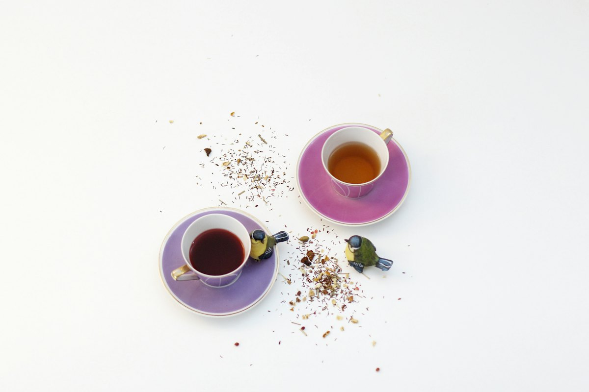
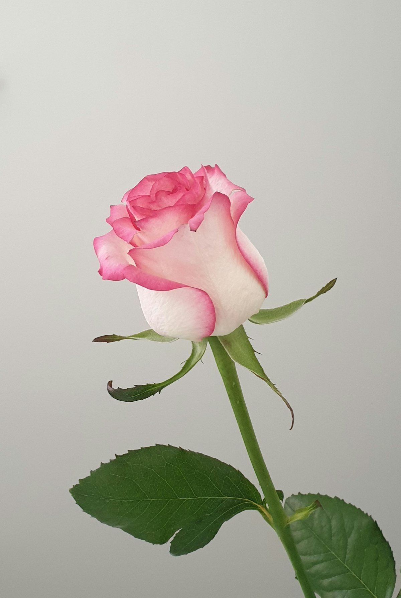

<title>愛される女性の特徴</title>
<meta name="claude:viewport-fit-sides" content="cover">
<link rel="preconnect" href="https://fonts.googleapis.com">
<link rel="preconnect" href="https://fonts.gstatic.com" crossorigin>
<link rel="stylesheet" href="https://fonts.googleapis.com/css2?family=Shippori+Mincho+B1:wght@500;700&family=Cormorant+Garamond:ital,wght@1,500&family=Zen+Kaku+Gothic+New:wght@400;500;700&display=swap">
<style>
/* Layout: a noble love letter. Lavender silk ground, ivory-and-gold framed photos, gold medallions for each chapter. Single light look on purpose. */
:root {
  --bg: #ebe1f4;          /* lavender silk */
  --bg-2: #f5e6ee;        /* rose blush for the gradient */
  --card: #fdf7ec;        /* ivory parchment */
  --ink: #3f3148;         /* deep plum-gray text */
  --muted: #74647e;
  --berry: #8a2f62;       /* noble berry: headings, emphasis */
  --pink: #d0699a;        /* rose pink accents */
  --pink-soft: #f8dfea;
  --gold: #a8801f;        /* gold, readable */
  --gold-hi: #e8cf86;     /* gold foil highlight */
  --yellow: #f7e09a;      /* marker */
  --line: #d9c7a0;        /* gold hairline */
  --display: "Shippori Mincho B1", "Hiragino Mincho ProN", "Yu Mincho", serif;
  --latin: "Cormorant Garamond", "Times New Roman", serif;
  --body: "Zen Kaku Gothic New", "Hiragino Sans", "Yu Gothic", "Noto Sans JP", sans-serif;
  color-scheme: light;
}

body {
  background:
    radial-gradient(60rem 40rem at 0% 0%, rgba(255,255,255,.35), transparent 60%),
    radial-gradient(50rem 40rem at 100% 30%, var(--bg-2), transparent 60%),
    radial-gradient(40rem 30rem at 0% 80%, rgba(232,207,134,.25), transparent 60%),
    var(--bg);
  background-attachment: fixed;
  color: var(--ink);
  font-family: var(--body);
  font-size: 17px;
  line-height: 1.95;
  letter-spacing: 0.02em;
}
.page {
  max-width: 36rem;
  margin: 0 auto;
  padding-left: max(18px, env(safe-area-inset-left, 0px));
  padding-right: max(18px, env(safe-area-inset-right, 0px));
  padding-block: 2rem 4rem;
  display: flex;
  flex-direction: column;
  gap: 3.25rem;
}
p { margin: 0; }
.stack { display: flex; flex-direction: column; gap: 1.4rem; }
strong { color: var(--berry); font-weight: 700; background: linear-gradient(transparent 64%, var(--yellow) 64%); }
.promise strong, .keyword strong { background: none; }

.gold-text {
  background: linear-gradient(100deg, var(--gold) 10%, var(--gold-hi) 45%, var(--gold) 80%);
  -webkit-background-clip: text; background-clip: text; color: transparent;
}

/* ornament divider */
.ornament { display: flex; align-items: center; gap: .8rem; color: var(--gold); }
.ornament::before, .ornament::after { content: ""; flex: 1; height: 1px; background: linear-gradient(90deg, transparent, var(--line), transparent); }
.ornament span { font-size: .9rem; letter-spacing: .6em; padding-left: .6em; }

/* framed photo */
.photo {
  margin: 0;
  padding: 8px;
  background: var(--card);
  border: 1px solid var(--line);
  border-radius: 4px;
  box-shadow: 0 10px 30px -14px rgba(90, 50, 100, .45);
  position: relative;
}
.photo::after {
  content: ""; position: absolute; inset: 14px;
  border: 1px solid rgba(232,207,134,.85);
  pointer-events: none;
}
.photo img { display: block; width: 100%; aspect-ratio: 4 / 3; object-fit: cover; }
.photo.tall img { aspect-ratio: 4 / 5; }
.photo figcaption { font-family: var(--latin); font-style: italic; color: var(--muted); font-size: .8rem; text-align: right; padding: .4rem .3rem 0; }

/* hero */
.hero { display: flex; flex-direction: column; gap: 1.4rem; }
.byline { display: flex; align-items: center; justify-content: center; gap: .6rem; color: var(--gold); font-size: .85rem; letter-spacing: .2em; }
.byline svg { width: 20px; height: 20px; flex: none; }
.hero .latin { font-family: var(--latin); font-style: italic; text-align: center; color: var(--pink); font-size: 1.05rem; letter-spacing: .08em; }
h1 {
  font-family: var(--display);
  font-weight: 700;
  font-size: clamp(1.7rem, 7vw, 2.35rem);
  line-height: 1.5;
  margin: 0;
  text-align: center;
  color: var(--ink);
  text-wrap: balance;
}
h1 em { font-style: normal; color: var(--berry); }
.lede { color: var(--muted); font-size: .95rem; text-align: center; }

/* the promise */
.promise {
  font-family: var(--display);
  font-size: 1.4rem;
  line-height: 1.65;
  color: var(--berry);
  text-align: center;
  padding: 1.8rem 1rem;
  background: linear-gradient(135deg, var(--pink-soft), var(--card));
  border: 1px solid var(--line);
  border-radius: 4px;
  outline: 1px solid var(--line);
  outline-offset: -8px;
}

/* trait sections */
.trait { display: flex; flex-direction: column; gap: 1.4rem; }
.trait-head { display: flex; flex-direction: column; align-items: center; gap: .8rem; text-align: center; }
.no {
  width: 3.2rem; height: 3.2rem; border-radius: 50%;
  display: grid; place-items: center;
  font-family: var(--display); font-weight: 700; font-size: 1.25rem; color: #4a2a10; text-shadow: 0 1px 0 rgba(255,255,255,.5);
  background: radial-gradient(circle at 35% 30%, var(--gold-hi), var(--gold) 70%);
  box-shadow: 0 0 0 3px var(--card), 0 0 0 4px var(--line);
}
.chapter { font-family: var(--latin); font-style: italic; color: var(--gold); font-size: .95rem; letter-spacing: .1em; }
h2 {
  font-family: var(--display);
  font-weight: 700;
  font-size: 1.4rem;
  line-height: 1.6;
  margin: 0;
  color: var(--berry);
  text-wrap: balance;
}
.reframe { display: flex; flex-wrap: wrap; justify-content: center; align-items: center; gap: .5rem; font-size: .9rem; }
.reframe .from { color: var(--muted); text-decoration: line-through; text-decoration-color: var(--pink); text-decoration-thickness: 1px; }
.reframe .arrow { color: var(--gold); }
.reframe .to { background: var(--pink-soft); color: var(--berry); font-weight: 700; padding: .1rem .8rem; border-radius: 999px; border: 1px solid var(--pink); }

.action {
  background: var(--card);
  border: 1px solid var(--line);
  border-left: 4px solid var(--gold-hi);
  border-radius: 4px;
  padding: 1.2rem 1.3rem;
  display: flex; flex-direction: column; gap: .6rem;
  font-size: .95rem;
  line-height: 1.85;
}
.action .label { display: flex; align-items: center; gap: .45rem; color: var(--gold); font-weight: 700; font-size: .8rem; letter-spacing: .15em; }
.action .label svg { width: 16px; height: 16px; }

/* fortune chapter */
.fortune {
  background: linear-gradient(180deg, var(--card), var(--pink-soft));
  border: 1px solid var(--line);
  outline: 1px solid var(--line);
  outline-offset: -10px;
  border-radius: 4px;
  padding: 2.2rem max(20px, 1.6rem);
  display: flex; flex-direction: column; gap: 1.4rem;
}
.fortune .photo { margin-inline: -.4rem; }
.eyebrow { color: var(--gold); font-size: .8rem; letter-spacing: .25em; font-weight: 700; text-align: center; }
.fortune h2, .summary h2 { text-align: center; }

/* summary */
.recap { list-style: none; margin: 0; padding: 1rem 1.2rem; display: flex; flex-direction: column; gap: .2rem; background: var(--card); border: 1px solid var(--line); border-radius: 4px; }
.recap li { display: grid; grid-template-columns: 1fr auto 1fr; gap: .6rem; align-items: baseline; font-size: .92rem; padding-block: .45rem; border-bottom: 1px dotted var(--line); }
.recap li:last-child { border-bottom: 0; }
.recap li span:first-child { color: var(--muted); }
.recap li span:nth-child(2) { color: var(--gold); }
.recap li span:last-child { color: var(--berry); font-weight: 700; }

/* CTA */
.cta {
  background: linear-gradient(180deg, var(--pink-soft), var(--card) 55%, #fbf0cf);
  border: 1px solid var(--line);
  outline: 1px solid var(--line);
  outline-offset: -10px;
  border-radius: 4px;
  padding: 2.2rem 1.4rem;
  display: flex; flex-direction: column; align-items: center; gap: 1.2rem;
  text-align: center;
}
.cta .photo { align-self: stretch; }
.keyword { font-family: var(--display); font-size: 1.15rem; line-height: 1.7; }
.keyword b { display: inline-block; font-size: 2.3rem; color: var(--berry); padding-inline: .2rem; }
.copy {
  font: inherit; font-size: .95rem; font-weight: 700; letter-spacing: .08em;
  color: #fff; background: linear-gradient(135deg, var(--pink), var(--berry));
  border: 1px solid var(--gold-hi); border-radius: 999px; padding: .8rem 1.8rem; cursor: pointer;
  box-shadow: 0 6px 18px -8px rgba(138,47,98,.7);
}
.copy:focus-visible { outline: 3px solid var(--gold); outline-offset: 3px; }
.sign { font-family: var(--latin); font-style: italic; color: var(--gold); font-size: 1.1rem; text-align: center; letter-spacing: .2em; }
.credit { color: var(--muted); font-size: .72rem; text-align: center; line-height: 1.6; }
.credit a { color: inherit; }

@media (prefers-reduced-motion: no-preference) {
  .byline svg { animation: sway 6s ease-in-out infinite; transform-origin: 50% 10%; }
  @keyframes sway { 0%,100% { transform: rotate(-8deg); } 50% { transform: rotate(8deg); } }
}
</style>

<svg width="0" height="0" style="position:absolute" aria-hidden="true">
  <symbol id="key" viewBox="0 0 24 24"><g fill="none" stroke="currentColor" stroke-width="1.8" stroke-linecap="round"><circle cx="12" cy="6" r="3.6"/><path d="M12 9.6V21M12 15h3M12 18.5h2.2"/></g></symbol>
</svg>

<main class="page">

  <header class="hero">
    <div class="byline"><svg><use href="#key"/></svg>イルミの恋のお手紙<svg><use href="#key"/></svg></div>
    <p class="latin">For the woman who loves deeply</p>
    <h1>不安になりやすい<br>あなたは、実は<br><em>「愛される女性」</em>の<br>素質を持っています</h1>
    <p class="lede">愛される女性の特徴を7つ。そのほとんどが、もうあなたの中にあります。</p>
    <figure class="photo"></figure>
  </header>

  <section class="stack">
    <p>こんにちは、イルミです。</p>
    <p>こんな経験ありませんか？</p>
    <p>LINEの返事がこないだけで、<br>胸がざわざわして眠れない。</p>
    <p>「嫌われたかも」と思うと、<br>何も手につかなくなる。</p>
    <p>彼のために尽くしてきたのに、<br>「重い」と言われてしまった。</p>
    <p>誰にも言えない恋を抱えて、<br>「こんな私は愛されない」と<br>夜にひとりで責めてしまう。</p>
    <p>その気持ち、よく分かります。</p>
    <p>がんばっても、がんばっても、<br>なぜか恋だけはうまくいかない。<br>「私のどこがいけないの？」と<br>自分を探し回ってしまう。</p>
    <p>そんな女性に、<br>鑑定でたくさん出会ってきました。</p>
    <p>だから、最初にお伝えさせてください。</p>
  </section>

  <p class="promise">あなたは、<br>ダメなんかじゃありません。</p>

  <section class="stack">
    <p>不安になりやすいのも、<br>尽くしすぎてしまうのも、<br>あなたの欠点ではありません。</p>
    <p>それはすべて、<br>愛される女性が持っている<br><strong>素質の裏返し</strong>です。</p>
    <p>今回は、愛される女性の特徴を7つ。<br>そして、それがもう<br>あなたの中にあることをお伝えします。</p>
  </section>

  <div class="ornament" aria-hidden="true"><span>✦✦✦</span></div>

  <article class="trait">
    <div class="trait-head">
      <span class="no">一</span>
      <span class="chapter">Chapter I</span>
      <h2>不安になるのは、<br>愛が深い証拠</h2>
      <div class="reframe"><span class="from">不安定</span><span class="arrow">→</span><span class="to">愛が深い</span></div>
    </div>
    <figure class="photo"></figure>
    <p>返信が半日こない。<br>何度もスマホを見てしまう。</p>
    <p>そんな自分を、<br>「なんでこんなに不安定なんだろう」と<br>責めていませんか。</p>
    <p>でも、どうでもいい相手に<br>人は不安になりません。</p>
    <p>不安になるのは、<br>それだけ深く人を愛せるから。</p>
    <p><strong>愛の深さは、愛される女性の<br>いちばんの土台です。</strong></p>
    <div class="action">
      <span class="label"><svg><use href="#key"/></svg>今日できる小さな行動</span>
      <p>不安になったら、胸に手を当てて<br>「それだけ好きなんだね」と<br>自分に声をかけてください。<br>不安を消そうとしなくて大丈夫です。<br>認めてあげるだけで、心はやわらぎます。</p>
    </div>
  </article>

  <div class="ornament" aria-hidden="true"><span>✦✦✦</span></div>

  <article class="trait">
    <div class="trait-head">
      <span class="no">二</span>
      <span class="chapter">Chapter II</span>
      <h2>尽くしてしまうのは、<br>与える力がある証拠</h2>
      <div class="reframe"><span class="from">尽くしすぎ</span><span class="arrow">→</span><span class="to">与える力がある</span></div>
    </div>
    <figure class="photo tall"></figure>
    <p>彼の好みに合わせる。<br>疲れていても、会いに行く。<br>つい、自分のことは後回し。</p>
    <p>それは、人に与えられる力です。<br>誰にでもできることではありません。</p>
    <p>愛される女性は、この力を<br><strong>自分にも向けています。</strong></p>
    <p>自分が満たされていると、<br>与える愛は「重さ」ではなく<br>「心地よさ」として届きます。</p>
    <div class="action">
      <span class="label"><svg><use href="#key"/></svg>今日できる小さな行動</span>
      <p>彼に何かしてあげる前に、<br>自分にも一つだけ、ごほうびを。<br>好きなお菓子、ゆっくりのお風呂。<br>それで十分です。</p>
    </div>
  </article>

  <div class="ornament" aria-hidden="true"><span>✦✦✦</span></div>

  <article class="trait">
    <div class="trait-head">
      <span class="no">三</span>
      <span class="chapter">Chapter III</span>
      <h2>気をつかいすぎるのは、<br>心が分かる人だから</h2>
      <div class="reframe"><span class="from">気をつかいすぎ</span><span class="arrow">→</span><span class="to">心が分かる</span></div>
    </div>
    <figure class="photo"></figure>
    <p>彼の声のトーンが少し違うだけで、<br>「何かあったのかな」と気づく。</p>
    <p>その敏感さに、<br>疲れてしまうこともありますよね。</p>
    <p>でも、それは<br>人の心の動きが分かる、<br>繊細でやさしい感性です。</p>
    <p>男性は、言わなくても<br>分かってくれる女性に、<br>深い安心を感じます。</p>
    <div class="action">
      <span class="label"><svg><use href="#key"/></svg>今日できる小さな行動</span>
      <p>察したことを、一つだけ<br>やわらかく言葉にしてみてください。<br>「今日、少し疲れてる？」<br>その一言が、彼の心をほどきます。</p>
    </div>
  </article>

  <div class="ornament" aria-hidden="true"><span>✦✦✦</span></div>

  <article class="trait">
    <div class="trait-head">
      <span class="no">四</span>
      <span class="chapter">Chapter IV</span>
      <h2>我慢してしまうのは、<br>関係を大切にしているから</h2>
      <div class="reframe"><span class="from">言えない</span><span class="arrow">→</span><span class="to">関係を大切にしている</span></div>
    </div>
    <figure class="photo"></figure>
    <p>「嫌われたくない」<br>その思いで、言いたいことを飲み込む。</p>
    <p>それは、この関係を<br>壊したくないという気持ちの表れです。</p>
    <p>ただ、我慢はたまると<br>ある日あふれてしまいます。</p>
    <p>愛される女性は、<br>小さいうちに、やさしく伝えています。</p>
    <p>コツは、主語を「私」にすること。<br>「なんで連絡くれないの？」ではなく、<br>「連絡があると、私はほっとするな」。</p>
    <div class="action">
      <span class="label"><svg><use href="#key"/></svg>今日できる小さな行動</span>
      <p>最近モヤっとしたことを一つ、<br>「私は〜と感じた」の形で<br>メモに書いてみてください。<br>伝える準備は、書くことから始まります。</p>
    </div>
  </article>

  <div class="ornament" aria-hidden="true"><span>✦✦✦</span></div>

  <article class="trait">
    <div class="trait-head">
      <span class="no">五</span>
      <span class="chapter">Chapter V</span>
      <h2>「重い」と言われたのは、<br>一途だから</h2>
      <div class="reframe"><span class="from">重い</span><span class="arrow">→</span><span class="to">一途</span></div>
    </div>
    <figure class="photo tall"></figure>
    <p>一人の人を、まっすぐに想う。<br>それを「重い」と言われると、<br>自分を否定された気持ちになりますよね。</p>
    <p>でも、一途さは<br>多くの男性が最後に選ぶ、<br><strong>「この人なら信じられる」という安心</strong>です。</p>
    <p>重いのは、あなたの愛ではありません。<br>伝え方が、少しだけ多すぎただけ。</p>
    <div class="action">
      <span class="label"><svg><use href="#key"/></svg>今日できる小さな行動</span>
      <p>送ろうとしたLINEを、<br>一度だけ読み返してください。<br>三つ伝えたいなら、一つにしぼる。<br>愛の量は変えずに、<br>渡し方だけを軽くしましょう。</p>
    </div>
  </article>

  <div class="ornament" aria-hidden="true"><span>✦✦✦</span></div>

  <article class="trait">
    <div class="trait-head">
      <span class="no">六</span>
      <span class="chapter">Chapter VI</span>
      <h2>自分を責めてしまうのは、<br>誠実だから</h2>
      <div class="reframe"><span class="from">自分を責める</span><span class="arrow">→</span><span class="to">誠実</span></div>
    </div>
    <figure class="photo"></figure>
    <p>うまくいかないとき、<br>「私が悪かったのかな」と考えてしまう。</p>
    <p>それは、人のせいにせず、<br>自分と向き合える誠実さです。</p>
    <p>その誠実さは、<br>長く愛される女性に共通しています。</p>
    <p>ただ、責めるだけで終わると、<br>あなたの心がすり減ってしまいます。</p>
    <div class="action">
      <span class="label"><svg><use href="#key"/></svg>今日できる小さな行動</span>
      <p>寝る前に、今日の自分に<br>「よくやったね」と一言。<br>できたことを一つ思い出すだけで、<br>心は少しずつ回復していきます。</p>
    </div>
  </article>

  <div class="ornament" aria-hidden="true"><span>✦✦✦</span></div>

  <article class="trait">
    <div class="trait-head">
      <span class="no">七</span>
      <span class="chapter">Chapter VII</span>
      <h2>誰にも言えない恋を抱えられるのは、<br>強いから</h2>
      <div class="reframe"><span class="from">誰にも言えない</span><span class="arrow">→</span><span class="to">強い</span></div>
    </div>
    <figure class="photo tall"></figure>
    <p>人には言えない恋。<br>複雑な関係。<br>相談できる相手がいない。</p>
    <p>それでも毎日、笑って過ごしている。<br>それは、とても強いことです。</p>
    <p>ただ、ひとつだけ。<br><strong>強い人ほど、ひとりで抱えすぎます。</strong></p>
    <p>抱えた想いは、<br>話すことで、はじめて軽くなります。</p>
    <div class="action">
      <span class="label"><svg><use href="#key"/></svg>今日できる小さな行動</span>
      <p>今の気持ちを、ノートに書き出してください。<br>誰にも見せなくて大丈夫です。<br>外に出すだけで、心に余白が生まれます。</p>
    </div>
  </article>

  <section class="fortune">
    <span class="eyebrow">占いの視点</span>
    <h2>運気は<br>「ひとりで抱えた心」で止まる</h2>
    <figure class="photo"></figure>
    <p>ここからは、占いの視点でお話しします。</p>
    <p>感受性の強い人は、<br><strong>縁を感じ取る力も強い人</strong>です。</p>
    <p>「この人だ」と思える出会いに<br>気づけるのは、あなたが繊細だからです。</p>
    <p>ただ、運気は水のようなもの。<br>心の中にためこむと、<br>流れが止まってしまいます。</p>
    <p>ひとりで抱えた不安は、<br>縁の流れをせき止めます。<br>話す、書く、受け止めてもらう。<br>それだけで、運気はまた流れ出します。</p>
    <p>そして、恋にはタイミングがあります。<br>関係が止まって見える時期は、<br>終わりではなく、<strong>種まきの時期</strong>です。</p>
    <p>季節は今、秋から冬へ。<br>内側を整えるのに、いちばん向いた季節です。<br>ここで心を軽くした人から、<br>縁の扉はひらいていきます。</p>
  </section>

  <section class="stack summary">
    <span class="eyebrow">まとめ</span>
    <h2>今のあなたは、<br>もう十分に素晴らしい</h2>
    <p>ここまで読んで、<br>気づいたことがあると思います。</p>
    <p>愛される女性の特徴は、<br><strong>ほとんど、もうあなたの中にある</strong>ということ。</p>
    <ul class="recap" aria-label="7つの言い換え">
      <li><span>不安になる</span><span>→</span><span>愛が深い</span></li>
      <li><span>尽くしすぎる</span><span>→</span><span>与える力</span></li>
      <li><span>気をつかいすぎる</span><span>→</span><span>心が分かる</span></li>
      <li><span>我慢してしまう</span><span>→</span><span>関係を大切にする</span></li>
      <li><span>「重い」</span><span>→</span><span>一途</span></li>
      <li><span>自分を責める</span><span>→</span><span>誠実</span></li>
      <li><span>誰にも言えない</span><span>→</span><span>強い</span></li>
    </ul>
    <p>あなたは、足りない人ではありません。<br>今のあなたのままで、素晴らしい人です。</p>
    <p>ただ、もったいないのは、<br>その素質の<strong>活かし方を知らないまま</strong>、<br><strong>ひとりで抱えてしまっていること</strong>。</p>
    <p>愛が深いのに、<br>不安ばかりが彼に伝わってしまう。</p>
    <p>与える力があるのに、<br>自分だけが空っぽになっていく。</p>
    <p>心が分かる人なのに、<br>自分の心だけは、誰にも分かってもらえない。</p>
    <p>それは、あなたが悪いのではありません。<br>素質の使い道を、<br>誰も教えてくれなかっただけです。</p>
    <p class="promise">愛される力を<br>持っているのに、<br>ひとりで抱えて、<br>恋で損をしていませんか。</p>
    <p>素質は、変えなくていい。<br>活かし方を知るだけで、<br>同じあなたのまま、恋の流れは変わります。</p>
  </section>

  <section class="cta">
    <figure class="photo"></figure>
    <h2>あなたの「鍵」を、<br>一緒に見つけませんか</h2>
    <p>あなたの素質が、<br>彼との関係でどう活きるのか。</p>
    <p>二人の縁は、今どんな流れにあるのか。<br>動き出すタイミングは、いつなのか。</p>
    <p>それは、あなただけの答えがあります。</p>
    <p>イルミは、どんな恋も否定しません。<br>不安定な気持ちも、<br>誰にも言えない想いも、<br>そのまま受け止めます。</p>
    <p><strong>もう、ひとりで抱えなくて大丈夫です。</strong></p>
    <p class="keyword">あなたの場合を<br>詳しく知りたい方は、<br>LINEで<b>『鍵』</b>と送ってね。</p>
    <button class="copy" id="copy-key" type="button">「鍵」をコピーする</button>
    <p>あなたの中にある愛される力を、<br>ひらく鍵を一緒に探しましょう。</p>
  </section>

  <p class="sign">— Ilumi —</p>
  <p class="credit">写真：<a href="https://unsplash.com/license">Unsplash</a>（Unsplash License）</p>

</main>

<script>
document.getElementById('copy-key').addEventListener('click', function () {
  var btn = this;
  navigator.clipboard.writeText('鍵').then(function () {
    btn.textContent = 'コピーしました';
  }).catch(function () {
    btn.textContent = '「鍵」と入力して送ってね';
  });
});
</script>
